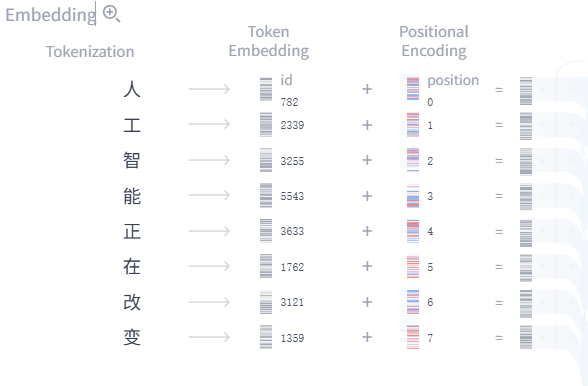
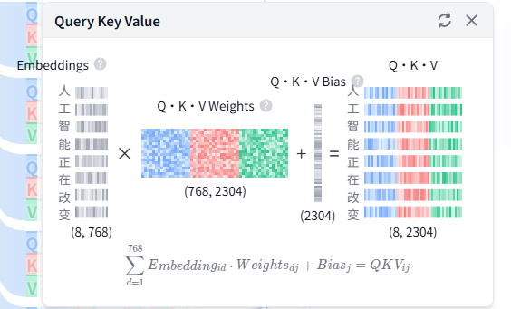
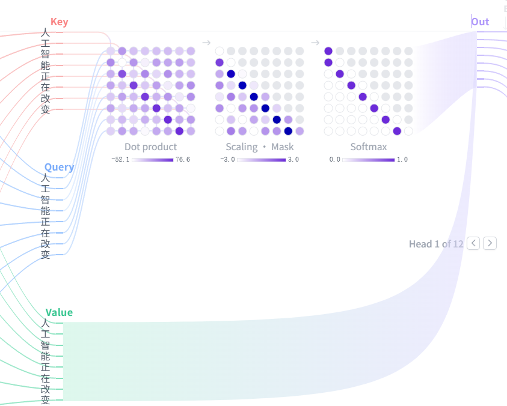
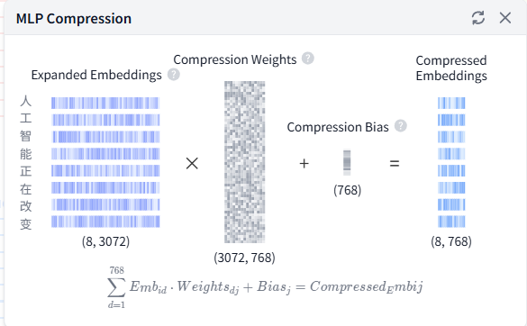
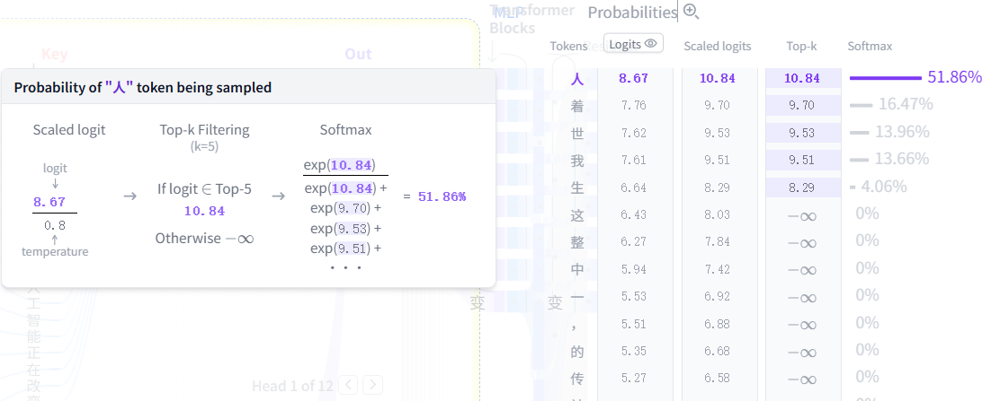

什么是 Transformer？
Transformer 是一种神经网络架构，从根本上改变了人工智能的研究范式。它最早出现在 2017 年的开创性论文 《Attention is All You Need》中，此后成为深度学习模型的主流架构，驱动了 OpenAI 的 GPT、Meta 的 Llama、Google 的 Gemini 等文本生成模型。除文本外，Transformer 还被应用于 音频生成、 图像识别、 蛋白质结构预测，乃至 游戏对弈，展示了其在众多领域的强大通用性。
从本质上看，文本生成 Transformer 模型遵循下一词元预测的原则：给定用户输入的文本提示， 最有可能跟随该输入的下一个词元（一个词或词的一部分）是什么？Transformer 的核心创新与强大之处在于其自注意力机制，该机制能够处理整个序列，并比以往架构更有效地捕捉远距离依赖关系。
GPT-2 系列是文本生成 Transformer 的典型代表。本工具使用 GPT-2（small）模型，共拥有 1.24 亿个参数。它虽非最新或最强大的 Transformer 模型，但与当前最先进的模型共享许多相同的架构组件和设计原则，是理解基础知识的理想起点。
Transformer 架构
每个文本生成 Transformer 都由以下三个核心组件构成：
- 嵌入（Embedding）：文本输入被分割成称为词元的更小单元，可以是单词或子词。这些词元被转换为数值向量（即嵌入），以捕获词语的语义含义。
- Transformer 块是模型处理和转换输入数据的基本构建单元。每个块包含：
- 注意力机制，Transformer 块的核心组件，允许词元之间相互通信，捕获上下文信息和词语间的关系。
- MLP（多层感知机）层，一种对每个词元独立操作的前馈网络。注意力层的目标是在词元之间路由信息，而 MLP 的目标是精炼每个词元的表示。
- 输出概率：最终的线性层和 Softmax（归一化）层将处理后的嵌入转换为概率，使模型能够对序列中的下一个词元做出预测。
词嵌入（Embedding）
假设你想用 Transformer 模型生成文字，输入了这样一段提示："数据可视化帮助用户"。这段输入需要被转换为模型能够理解和处理的格式，这就是词嵌入（Embedding）的作用：它将文本转化为模型可处理的数值表示。将提示转换为嵌入需要经过以下四个步骤：1) 对输入进行分词（Tokenization），2) 获取词元嵌入（Token Embedding），3) 添加位置信息（Positional Encoding），最后 4) 将词元编码与位置编码相加，得到最终的嵌入表示。下面我们逐步了解每个步骤。

步骤 1：分词（Tokenization）
分词是将输入文本拆分为更小、更易于处理的单元——词元（Token）的过程。词元可以是一个完整的词，也可以是词的一部分（子词）。词汇表在模型训练前确定：GPT-2 的词汇表共有 50,257 个唯一词元。将输入文本拆分为具有唯一 ID 的词元后，便可从嵌入矩阵中获取其对应的向量表示。
步骤 2：词元嵌入（Token Embedding）
GPT-2 (small) 将词汇表中的每个词元表示为一个 768 维向量；向量维度取决于具体模型。这些嵌入向量存储在形状为 (50,257, 768) 的矩阵中，约包含 3,900 万个参数。这一庞大的矩阵使模型能够为每个词元赋予语义信息：在语言中用法或含义相近的词元，在这个高维空间中彼此靠近，而不相似的词元则相距较远。
步骤 3：位置编码（Positional Encoding）
词嵌入层还会编码每个词元在输入提示中的位置信息。不同模型采用不同的位置编码方式。GPT-2 从头开始训练自己的位置编码矩阵，将其直接融入训练过程。
步骤 4：最终嵌入（Final Embedding）
最后，将词元编码与位置编码相加，得到最终的嵌入表示。这一组合表示同时捕获了词元的语义信息及其在输入序列中的位置信息。
Transformer 块
Transformer 处理的核心在于 Transformer 块，它由多头自注意机制和多层感知机（MLP）层组成。大多数模型由多个顺序堆叠的这样的块构成。词元表示从第一个块到最后一个块逐层演化，使模型能够建立对每个词元的深层理解。这种层次化方式带来了输入的高阶表示。我们所考察的 GPT-2 (small) 共有 12 个这样的块。
多头自注意机制（Multi-Head Self-Attention）
自注意机制使模型能够捕捉序列中词元之间的关系，使每个词元的表示受到其他词元的影响。多个注意头让模型能够从不同角度考察这些关系；例如，一个头可能捕捉短距离语法联系，另一个则更关注广泛的语义上下文。下面我们逐步介绍多头自注意的计算过程。
步骤 1：Query、Key 与 Value 矩阵

每个词元的嵌入向量被转换为三个向量： Query (Q)（查询）、 Key (K)（键）和 Value (V)（值）。这三个向量通过将输入嵌入矩阵与对应的可学习权重矩阵相乘得到。以下是一个网页搜索类比，帮助我们建立这些矩阵的直觉：
- Query (Q) 是你在搜索框输入的搜索词。这是你想要“深入了解的”词元。
- Key (K) 是搜索结果中每个网页的标题。它代表 Query 可以关注的候选词元。
- Value (V) 是展示的网页实际内容。一旦匹配到合适的搜索词（Query）与相关结果（Key），我们就要获取最相关页面的内容（Value）。
通过使用这些 QKV 值，模型可以计算注意力分数，并确定在生成预测时每个词元应获得多少关注。
步骤 2：多头分割
Query、Key 和 Value 向量被分割为多个头——在 GPT-2 (small) 中分为 12 个头。每个头独立处理嵌入的一个片段，捕捉不同的语法和语义关系。这种设计支持并行学习多种语言特征，增强了模型的表达能力。
步骤 3：掩码自注意力（Masked Self-Attention）
在每个头中，我们执行掩码自注意力计算。该机制使模型在生成序列时，能集中关注输入的相关部分，同时阻止其访问未来的词元。

- 点积（Dot Product）：Query 与 Key 矩阵的点积决定了注意力分数，从而生成一个方阵，用于反映所有输入词元之间的关系。
- 缩放与掩码（Scaling · Mask）：注意力分数会先进行缩放，再对注意力矩阵的上三角区域施加掩码，防止模型访问未来词元，并将这些位置的值设为负无穷。模型必须学会在不“偷看”未来的情况下预测下一个词元。
- Softmax 与 Dropout：在掩码和缩放之后，注意力分数会通过 softmax（归一化函数）转换为概率，并可选择进一步使用 dropout（随机失活）做正则化。矩阵的每一行之和都为 1，用来表示当前位置左侧其他词元与它的相关程度。
步骤 4：输出与拼接
模型将掩码自注意力分数与 Value 矩阵相乘，得到自注意机制的 最终输出。GPT-2 有 12 个自注意头，每个头捕捉不同的词元间关系。各头的输出将被拼接，再经线性投影处理。
MLP（多层感知机）

当多头自注意机制捕捉到输入词元之间的多样关系后，各个头的拼接输出会被送入多层感知机（MLP）层，以增强模型的表示能力。MLP 模块由两次线性变换组成，中间夹着一个 GELU（高斯误差线性单元）激活函数。
第一次线性变换会将输入维度从 768 扩展四倍到 3072。这一扩展步骤使模型能够将词元表示投影到更高维的空间中，从而捕捉在原始维度下可能并不明显的、更丰富也更复杂的模式。
第二次线性变换会再将维度压缩回原始大小 768。这一步在保留扩展阶段引入的有用非线性变换的同时，也让表示重新回到可管理的规模。
与在词元之间整合信息的自注意机制不同，MLP 会独立处理每个词元，只是将每个词元表示从一个空间映射到另一个空间，从而提升模型整体的表达能力。
输出概率（Output Probabilities）
当输入经过所有 Transformer 块处理后，输出会进入最终的线性层，为词元预测做准备。这一层会将最终表示投影到一个 50,257 维空间中，词汇表中的每个词元在这里都对应一个称为 logit（未归一化分数）的数值。任何词元都可能成为下一个词，因此这一过程让我们能够按“成为下一个词的可能性”对所有词元进行排序。随后，我们再应用 softmax（归一化函数），将 logits（未归一化分数）转换为总和为 1 的概率分布，从而根据各自的概率对下一个词元进行采样。

最后一步是从这个分布中采样，生成下一个词元。在这个过程中，temperature（温度）超参数起着关键作用。从数学上讲，它是一个非常简单的操作：将模型输出的 logits 直接除以 temperature：
temperature = 1：将 logits 除以 1 不会对 softmax 输出产生任何影响。temperature < 1：更低的温度会让概率分布更尖锐，使模型更“自信”、更具确定性，因此输出也更可预测。temperature > 1：更高的温度会让概率分布更平缓，使生成文本包含更多随机性，也就是一些人所说的模型“创造力”。
此外，采样过程还可以通过 top-k（保留前 k 个候选）和 top-p（按累计概率截断）参数进一步细化：
top-k sampling（前 k 采样）：将候选词元限制为概率最高的前 k 个词元，过滤掉可能性较低的选项。top-p sampling（核采样）：选择累计概率刚好超过阈值 p 的最小词元集合，在保证只保留高可能性候选的同时，仍然允许一定多样性。
通过调节 temperature、top-k 和 top-p，你可以在确定性和多样性之间取得平衡，从而按自己的需求调整模型行为。
辅助架构特性（Auxiliary Architectural Features）
Transformer 模型还包含若干辅助架构特性，用来提升整体性能。它们虽然对模型效果很重要，但相较于理解架构核心概念，本身并不是最关键的部分。层归一化（Layer Normalization）、Dropout（随机失活）和残差连接（Residual Connections）都是 Transformer 中的重要组件，尤其在训练阶段更为关键。层归一化有助于稳定训练并加快收敛；Dropout 通过随机停用部分神经元来防止过拟合；残差连接则让梯度可以更直接地在网络中传播，从而缓解梯度消失问题。
层归一化（Layer Normalization）
层归一化有助于稳定训练过程并改善收敛表现。它通过在特征维度上对输入进行归一化，确保激活值的均值和方差保持一致。这种归一化能够缓解内部协变量偏移带来的问题，使模型学习更有效，也降低对初始权重的敏感性。在每个 Transformer 块中，层归一化会应用两次：一次在自注意机制之前，一次在 MLP 层之前。
Dropout（随机失活）
Dropout（随机失活）是一种用于防止神经网络过拟合的正则化技术，它会在训练过程中随机将一部分模型连接置零。这会促使模型学习更稳健的特征，减少对特定神经元的依赖，从而帮助网络更好地泛化到新的、未见过的数据上。在模型推理阶段，dropout 会被关闭。从某种意义上说，这相当于利用训练得到的多个子网络的集成效果，因此通常能带来更好的模型表现。
残差连接（Residual Connections）
残差连接最早在 2015 年的 ResNet 模型中提出。这一架构创新改变了深度学习的发展轨迹，因为它使训练非常深的神经网络成为可能。残差连接本质上是一种跨越一个或多个层的捷径，它会把某一层的输入直接加到该层输出上。这有助于缓解梯度消失问题，使得训练由多个 Transformer 块堆叠而成的深层网络更容易。在 GPT-2 中，每个 Transformer 块内部会使用两次残差连接：一次在 MLP 之前，一次在之后，以确保梯度更顺畅地传播，并让前面的层在反向传播时获得足够更新。
交互功能（Interactive Features）
Transformer Explainer 被设计成交互式工具，让你可以探索 Transformer 的内部工作机制。下面是一些可以直接上手体验的交互功能：
- 输入你自己的文本序列，观察模型如何处理输入并预测下一个词。你可以查看注意力权重、中间计算结果，以及最终输出概率是如何得到的。
- 使用 temperature 滑块 来控制模型预测的随机性。通过调整温度值，你可以让模型输出更确定，或者更有“创造力”。
- 选择 top-k 和 top-p 采样方式，调整推理阶段的采样行为。你可以尝试不同参数，观察概率分布如何变化，以及它们如何影响模型预测。
- 与注意力图交互，查看模型如何关注输入序列中的不同词元。将鼠标悬停在词元上即可高亮其注意力权重，并进一步理解模型如何捕捉上下文和词语之间的关系。
视频教程（Video Tutorial）
Transformer Explainer 是如何实现的？
Transformer Explainer 内置了一个可直接在浏览器中运行的 GPT-2（small）实时模型。该模型源自 Andrej Karpathy 的 nanoGPT 项目 的 PyTorch 版 GPT 实现，并被转换为 ONNX Runtime 格式，以便在浏览器中顺畅执行。界面使用 JavaScript 构建，前端框架采用 Svelte ，动态可视化则使用 D3.js 实现。所有数值都会随着用户输入实时更新。
谁开发了 Transformer Explainer？
Transformer Explainer 由以下成员共同开发： Aeree Cho, Grace C. Kim, Alexander Karpekov, Alec Helbling, Jay Wang, Seongmin Lee, Benjamin Hoover, and Polo Chau 他们均来自佐治亚理工学院（Georgia Institute of Technology）。